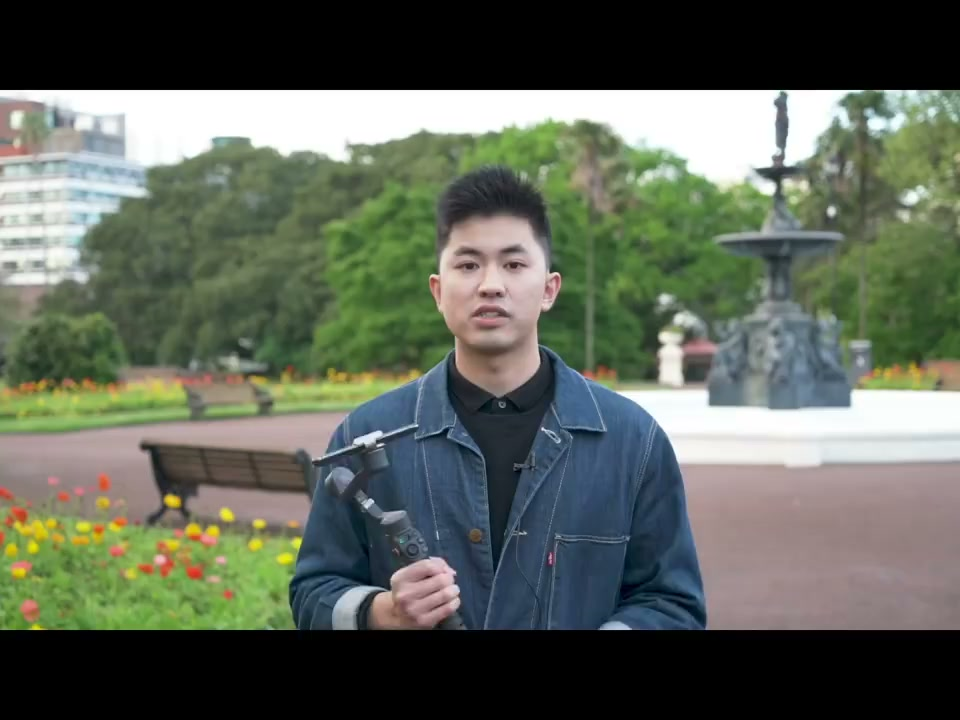
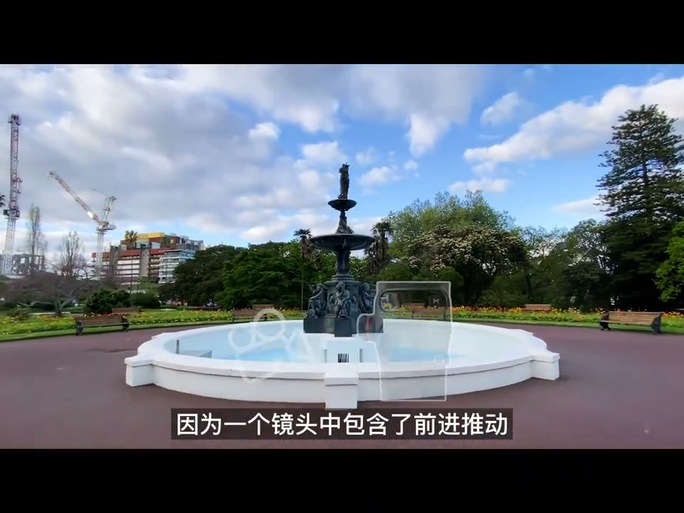
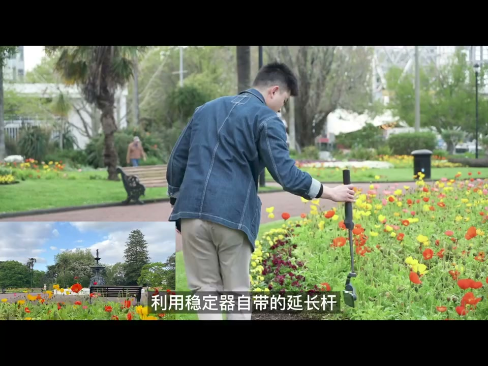
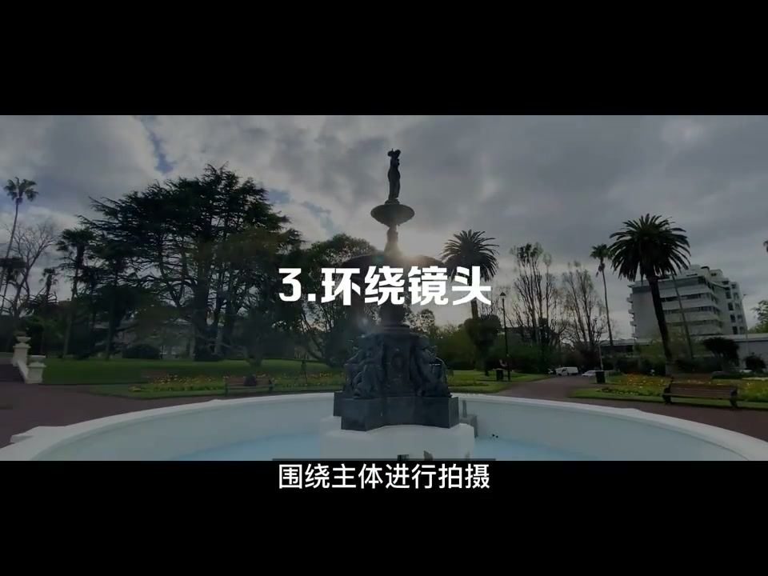
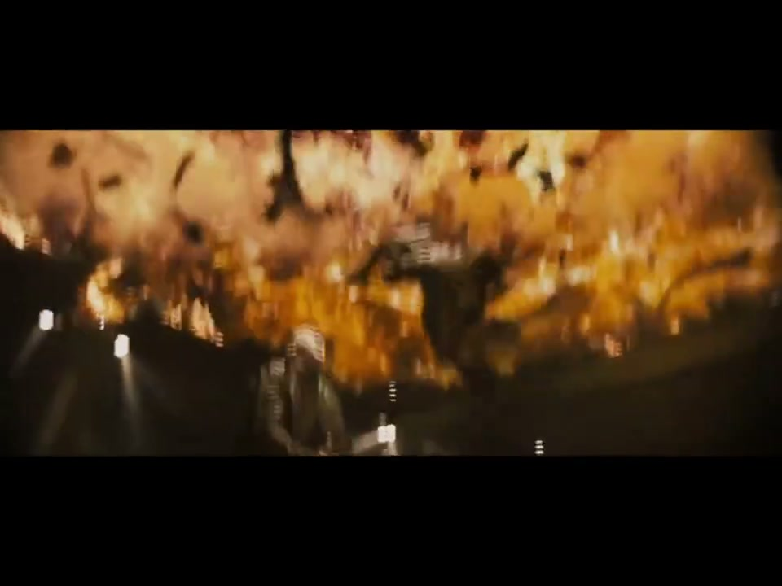
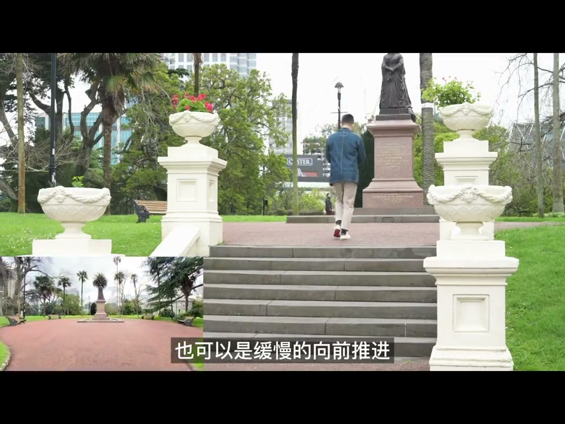

01
中文
今天我会用手机和云台教大家几种电影中常见的运镜方式。
EN
Today I'll teach several common cinematic camera moves using a phone and gimbal.
表达提示camera moves（运镜方式）

Scene English · 拍摄 · 电影运镜
Phone Filmmaking: 6 Cinematic Camera Moves Beginners Must Learn
🎧 语音讲解
Push-in Plus Tilt
情境拿着稳定器向前走的同时推动摇杆，一个镜头包含前推和上摇两个运动。
今天我会用手机和云台教大家几种电影中常见的运镜方式。
Today I'll teach several common cinematic camera moves using a phone and gimbal.
表达提示camera moves（运镜方式）
第一个是前推加上摇镜头。
The first is a push-in combined with an upward tilt.
表达提示push-in and tilt（前推加摇）
在拿着稳定器向前走的过程中，同时用手指往上推动摇杆。
Walk forward with the gimbal while pushing the joystick up.
表达提示joystick（摇杆）
因为一个镜头中包含了前推和向上摇两个运动，画面整体会变得十分动感。
With both motions in one shot, the frame becomes very dynamic.
表达提示dynamic（动感）
camera moves（运镜方式
push-in and tilt（前推加摇

The Lateral Move
情境利用稳定器延长杆翻转云台拍摄，配合前景才能产生有层次的画面。
第二个是横移镜头。
The second is the lateral tracking move.
表达提示lateral move（横移）
利用稳定器自带的延长杆，翻转云台进行拍摄。
Use the built-in extension rod and flip the gimbal to shoot.
表达提示extension rod（延长杆）
这里一定要注意配合上前景，才能产生有层次的画面。
You must include a foreground for layered frames.
表达提示foreground（前景）
横移镜头在电影中经常出现，跟随人物进行左右之间的移动。
Lateral moves appear often in films, following characters left and right.
表达提示follow the character（跟随人物）
lateral move（横移
extension rod（延长杆

The Orbit Shot
情境围绕主体拍摄，半蹲前进能带来更稳定的画面。
第三个是环绕镜头，围绕主体进行拍摄。
Third is the orbit shot, circling the subject.
表达提示orbit shot（环绕镜头）
大家可以看到我的脚步其实是半蹲前进的状态。
You can see my steps are a half-crouch walk.
表达提示half-crouch（半蹲）
这样半蹲的前进能够给到我们更稳定的画面。
A half-crouch walk gives a steadier frame.
表达提示steadier frame（更稳定）
在拍摄过程中，云台始终围绕主体进行拍摄。
Throughout, the gimbal keeps circling the subject.
表达提示keep circling（始终环绕）
orbit shot（环绕镜头
half-crouch（半蹲

The Push-in Shot
情境前推镜头简单但用法多，人物伤感或思考时导演常用缓慢前推增强情绪。
第四个是前推镜头，非常简单，但是用法却非常多。
Fourth is the push-in—simple but endlessly useful.
表达提示push-in（前推）
它可以是快速的向前推进，也可以是缓慢的向前推进。
It can be a fast push or a slow one.
表达提示fast or slow（快慢皆可）
电影中经常会出现人物伤感或者思考的时刻。
Films often show characters feeling sad or lost in thought.
表达提示sad or thinking（伤感或思考）
一般导演都会用缓慢前推，去进行人物情绪的增强。
Directors usually push in slowly to heighten the emotion.
表达提示heighten emotion（增强情绪）
push-in（前推
fast or slow（快慢皆可

The Rising Shot
情境完全蹲下后用脚和身体同时提升，画面更平稳；缓慢上升常用于揭露隐藏画面。
第五个是上升镜头，这里有一个使用稳定器的技巧。
Fifth is the rising shot—here's a gimbal trick.
表达提示rising shot（上升镜头）
一般我会完全蹲下，然后运用脚和身体同时往上提升。
I usually squat fully, then rise with legs and body together.
表达提示squat and rise（蹲下提升）
这样的画面出来更加平稳。
The result is a much steadier shot.
表达提示steadier（更平稳）
缓慢的镜头上升一般在电影中用作画面遮罩，揭露隐藏画面。
A slow rise often acts as a mask, revealing hidden content.
表达提示reveal hidden content（揭露隐藏画面）
rising shot（上升镜头
squat and rise（蹲下提升

The Focus-Pull Lateral Move
情境通过横移镜头运动，在两个视觉焦点之间进行切换。
最后一个镜头是横移焦点转换镜头。
The last one is a lateral move that shifts focus.
表达提示focus shift（焦点转换）
这个镜头的意思是通过横移的镜头运动，在两个视觉焦点之间进行切换。
It shifts between two visual focal points through a lateral motion.
表达提示two focal points（两个焦点）
第一个我们的焦点在这个陶瓷人脸上。
First, the focus is on the ceramic face.
表达提示ceramic face（陶瓷人像）
然后通过横移，把焦点切换到后面的雕塑上。
Then the lateral move shifts focus to the sculpture behind.
表达提示shift to the sculpture（切到雕塑）
focus shift（焦点转换
two focal points（两个焦点
说前推加摇
说横移层次
说环绕稳定
说慢推情绪
说上升揭示
复合运镜更动感。
横移要有前景。
半蹲环绕更稳。
情绪用慢推。
上升用于揭示。